Задание №1
Два игрока, Петя и Ваня, играют в следующую игру. Перед игроками лежат две кучи камней. Игроки ходят по очереди, первый ход делает Петя. За один ход игрок может добавить в одну из куч (по своему выбору) один камень или увеличить количество камней в куче в два раза. Игра завершается в тот момент, когда суммарное количество камней в кучах становится не менее 77. Победителем считается игрок, сделавший последний ход, т. е. первым получивший такую позицию, при которой в кучах будет 77 или больше камней. В начальный момент в первой куче было семь камней, во второй куче — S камней; 1 ≤ S ≤ 69. Найдите два таких значения S, при которых у Пети есть выигрышная стратегия, причём одновременно выполняются два условия:
— Петя не может выиграть за один ход;
— Петя может выиграть своим вторым ходом независимо от того, как будет ходить Ваня. |
Решение:
- Открываем Excel и вносим необходимые нам данные в следующем виде: А1 - минимальное суммарное значение камней для победы, А2 - кол-во камней в первой куче, B2 - кол-во камней во второй куче(S)
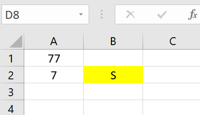
- Далее нам нужно заполнить "каркас" таблицы следующим образом. Необходимо объединить ячейки "Петя(1 ход)" и "Ваня(1 ход)"
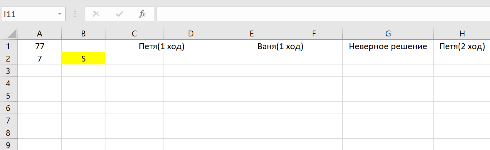
- Теперь нужно заполнить все варианты развития событий, включая во внимание все возможные ходы:
- +1
- *2
Делать это нужно при помощи команд. Для наглядности лучше заменить S на любое число, например 10. В своем первом ходу Петя может увеличить первую кучу на 1, вторая же куча останется нетронутой. Заполнять ячейки лучше всего командами
На каждый ход Пети существует 4 различных хода Вани, их нам нужно заполнить командами. В первом варианте он может увеличить первую кучу на 1, во втором - увеличить вторую кучу на 1, в втретьем - увеличить первую кучу в 2 раза, в четвертом - увеличить вторую кучу в 2 раза.
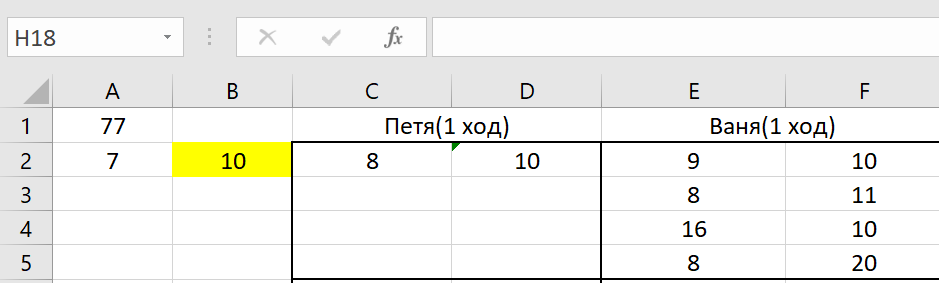
- Далее необходимо заполнить оставшиеся 3 варианта первого хода Пети также через команды. это можно сделать путем копирования области, которая находится внутри черной рамки, и замены значений первого хода Пети на другие варианты. В итоге у нас сохранятся все формулы и заново заполнять не придется
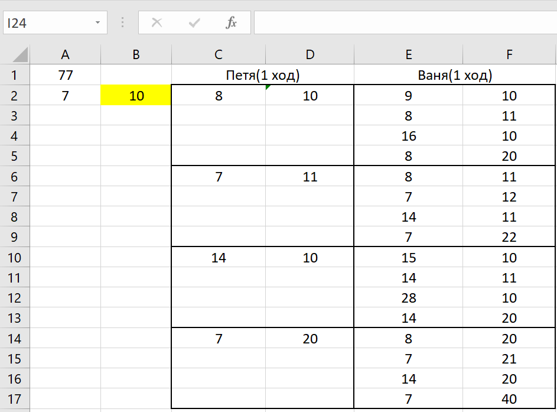
- В ячейку "Неверное решение" нам нужно написать следующую команду и растянуть на всю таблицу
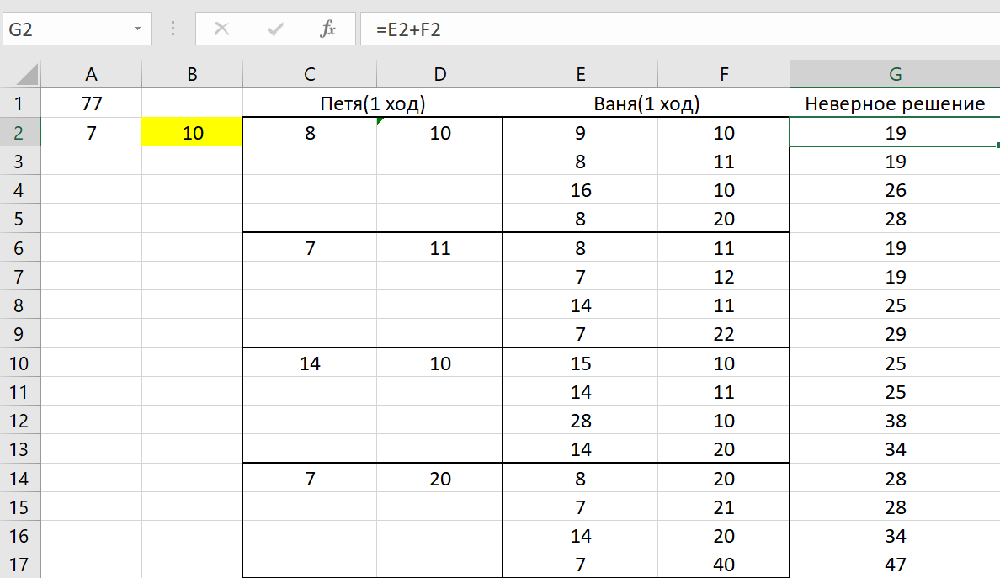
Эта ячейка суммирует две кучки, которые остались после хода Вани, чтобы проверить не победил ли он. Если он победил, то нам по условию не подходит такое решение, значит его нужно как-то выделить. Сделать это можно таким образом: Кликаем на самую верхнюю ячейку и нажимаем на "условия форматирования" 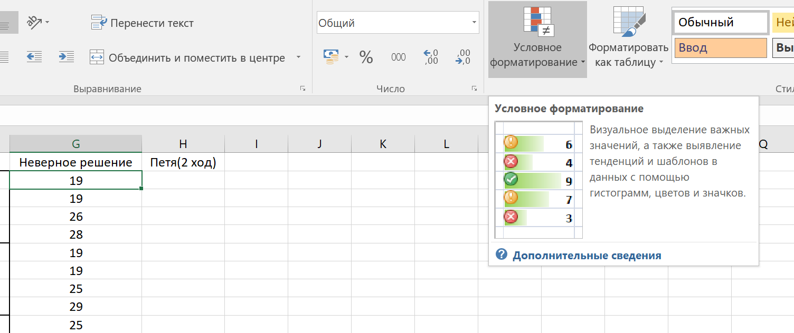
Правила выделения ячеек - другие правила

Нам нужно указать "больше или равно" и выбрать ячейку А1. 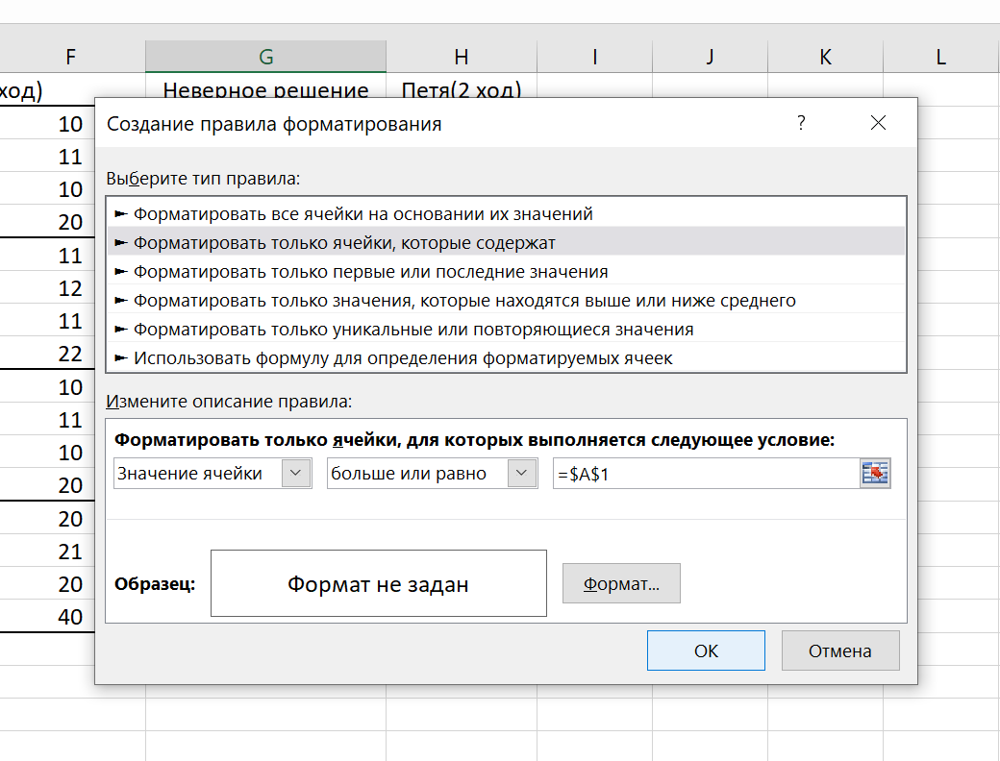
Затем выбираем формат - заливка и выбираем цвет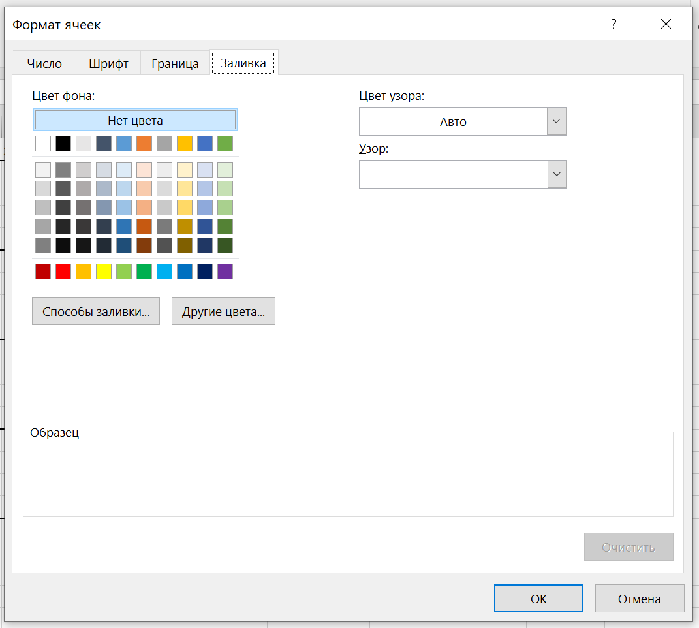
- После этого в ячейке "Петя(2 ход)" нам нужно получить максимальное число, чтобы он победил. Для этого нужно максимальное число камней в какой-то куче умножить на 2 и сложить с минимальной кучей. Для этого используем данную команду и растягиваем команду на всю таблицу
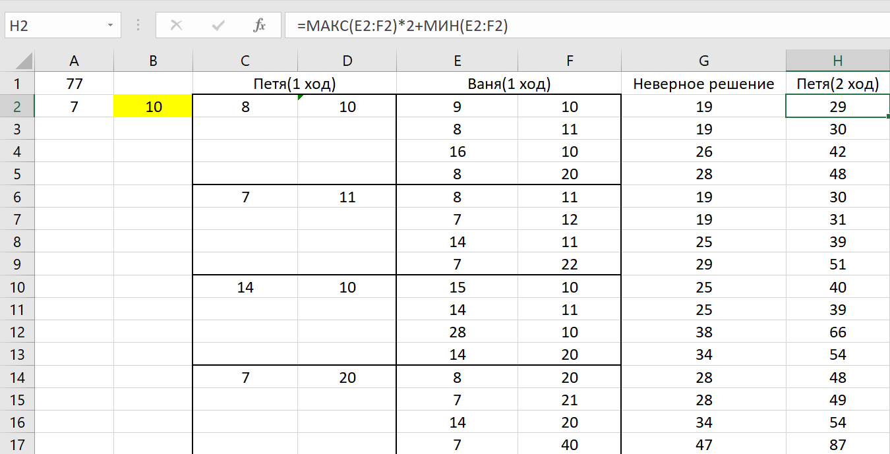
Чтобы у нас показывался результат, который больше или равен 77, нужно провести те же самые действия, что и в предыдущем пункте
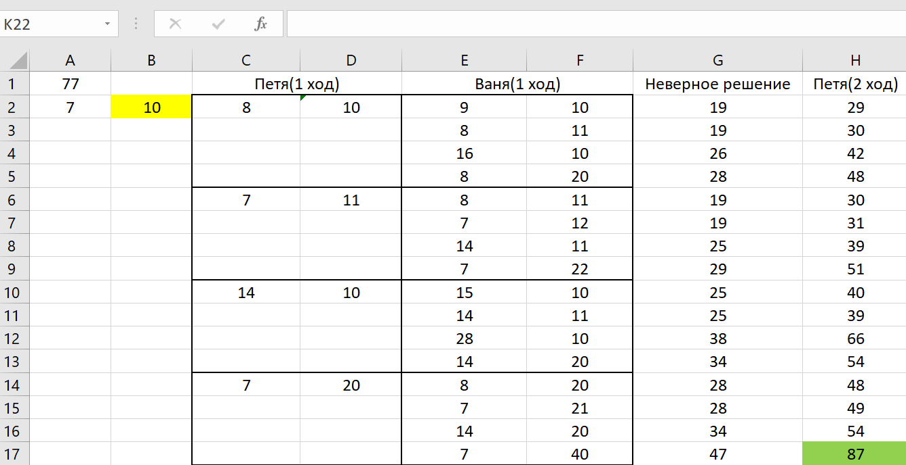
- Теперь нам остается просто менять значения S и смотреть на зеленые и красные ячейки. Если будут идти подряд 4 зеленые ячейки и не будут перекрываться красными в одной части таблицы, то это число и есть ответ.
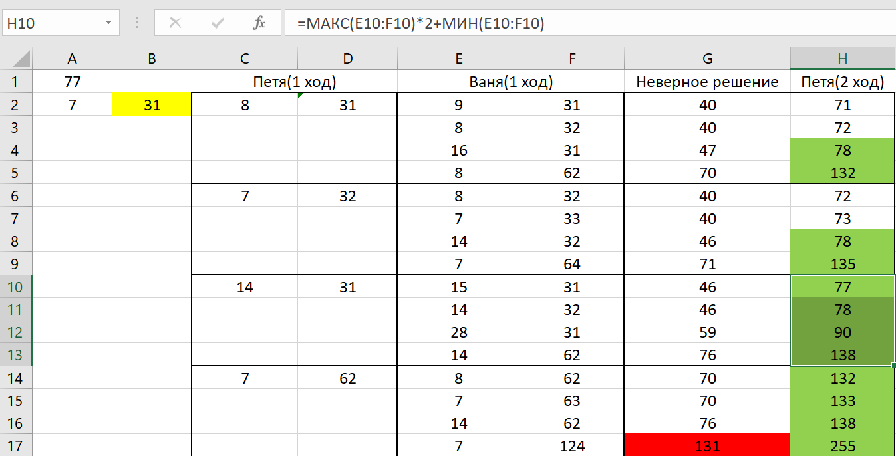
Мы видим, что при числе 31 у нас 4 подряд идущих зеленых цвета, неперекрываемых красными, это и есть наш первый ответ
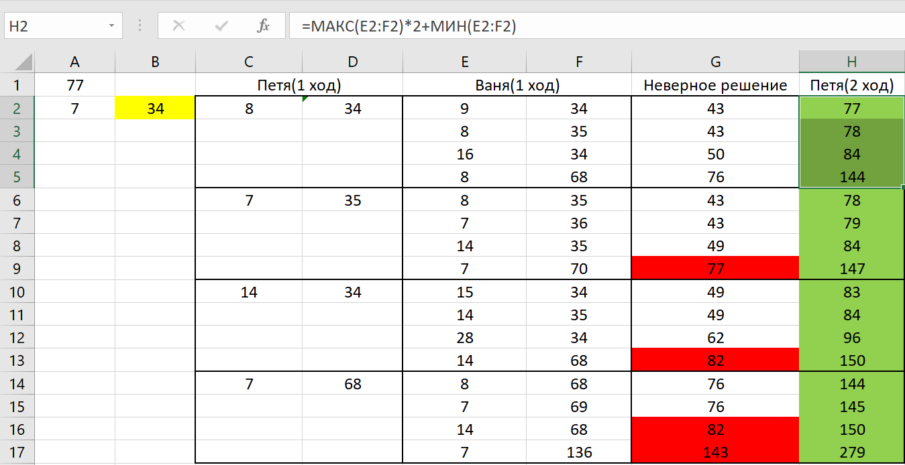
При числе 34 мы видим такую же ситуацию, это и есть наш второй ответ.
Ответ:31, 34
Задание №2
Два игрока, Петя и Ваня, играют в следующую игру. Перед игроками лежит куча камней. Игроки ходят по очереди, первый ход делает Петя. За один ход игрок может добавить в кучу один или четыре камня либо увеличить количество камней в куче в пять раз. Победителем считается игрок, сделавший последний ход, т. е. первым получивший кучу, в которой будет 68 или больше камней. В начальный момент в куче было S камней; 1 ≤ S ≤ 67. Найдите два таких значения S, при которых у Пети есть выигрышная стратегия, причём одновременно выполняются два условия:
— Петя не может выиграть за один ход;
— Петя может выиграть своим вторым ходом независимо от того, как будет ходить Ваня.
Найденные значения запишите в ответе в порядке возрастания без разделительных знаков. |
Решение:
- В этом варианте задания мы уже имеем дело не с двумя, а с одной кучей, но алгоритм остается тем же. Заполняем таблицу таким образом: А1 - минимальное суммарное значение камней для победы, А2 - кол-во камней в куче S(для наглядности можно взять любое число, например 10)
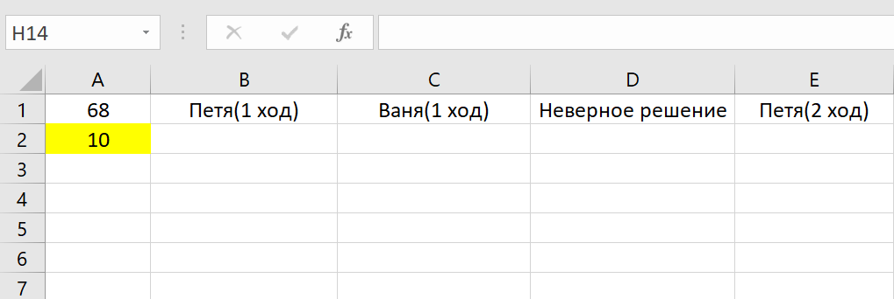
- Затем необходимо заполнить все варианты событий, включая во внимание все возможные ходы:
- +1
- +4
- *5
Заполнять нужно формулами.
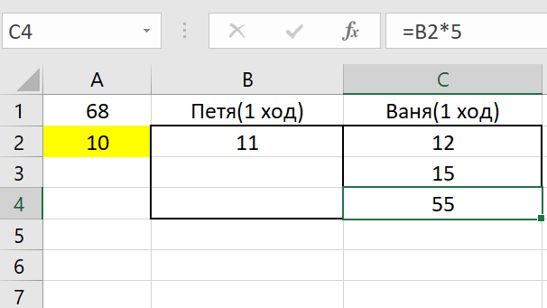
Теперь надо заполнить эту таблицу полностью.
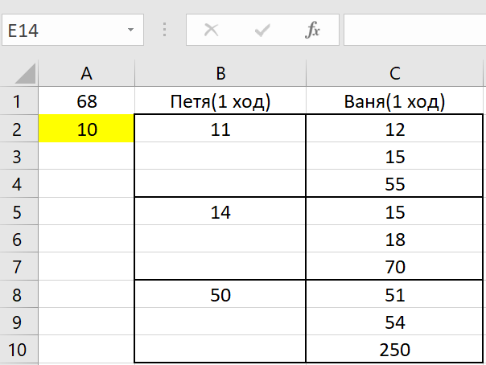
- В графу "Неверное решение" нужно поместить кол-во камней после хода Вани. На нее мы так же ставим индикатор, как и в первом задании. Делаем все через формулы.
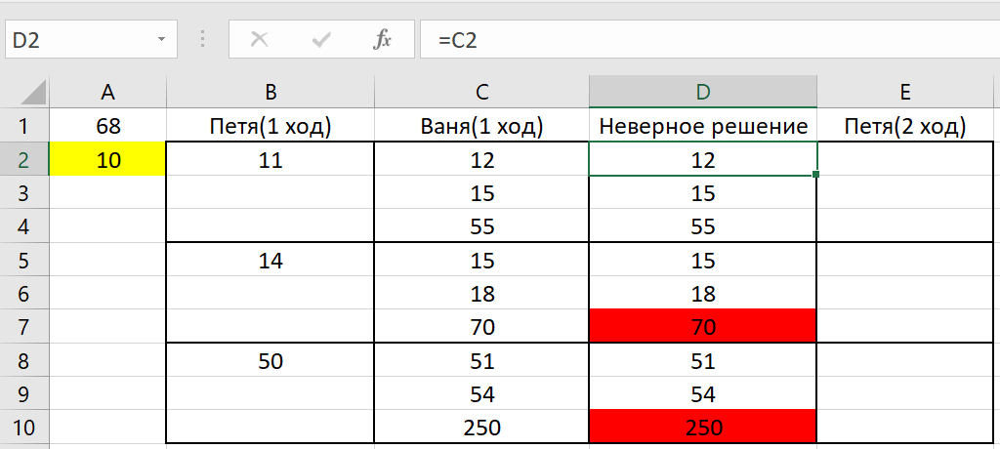
- В последнюю ячейку мы заносим последний результат Вани, умноженный на 5, так как только так мы добьёмся максимального числа камней и победы. Не забываем поставить индикатор.
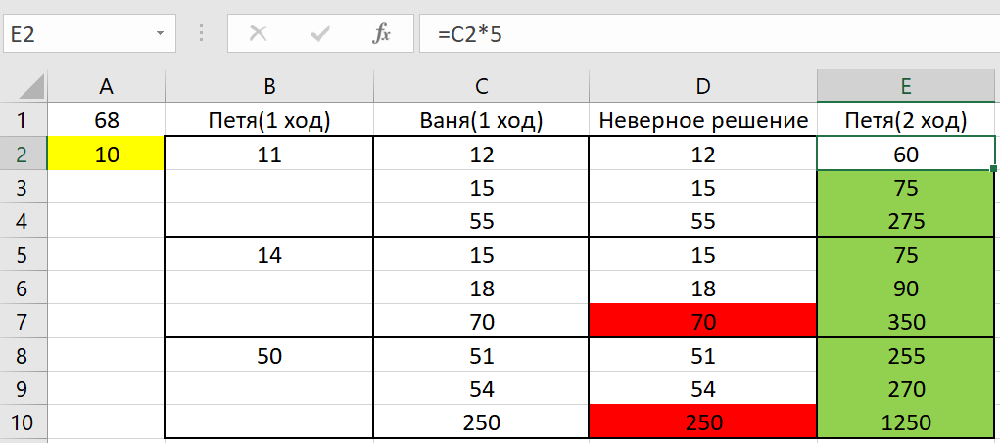
- Теперь просто меняем значения S и смотрим на идующие подряд 3 зеленые колонки, которые не перекрываются красными.
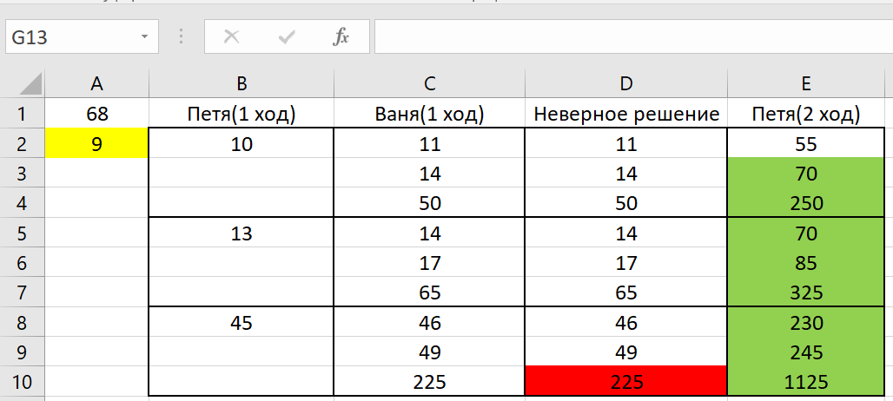
Получилось число 9
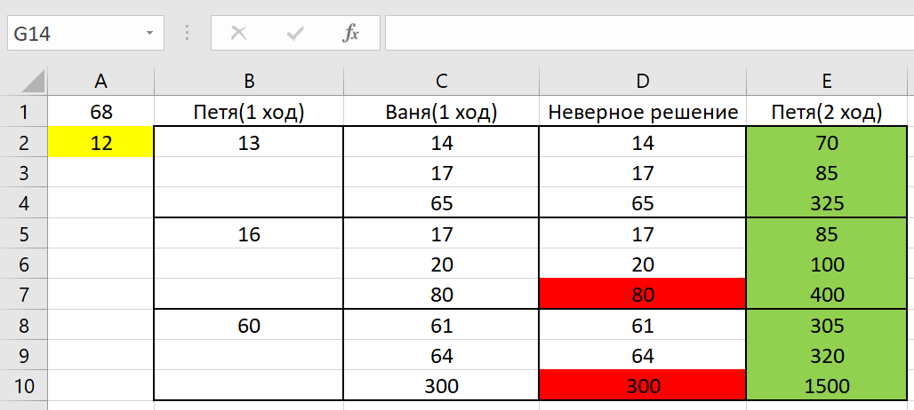
И число 12. Записываем ответ.
Ответ:9, 12
Назад |